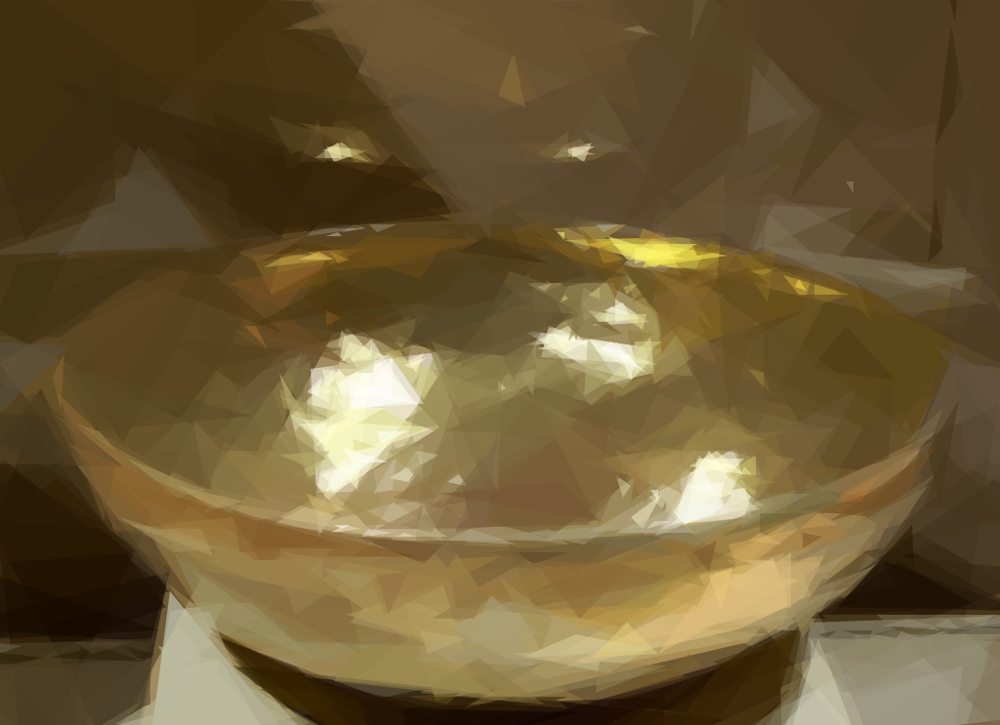
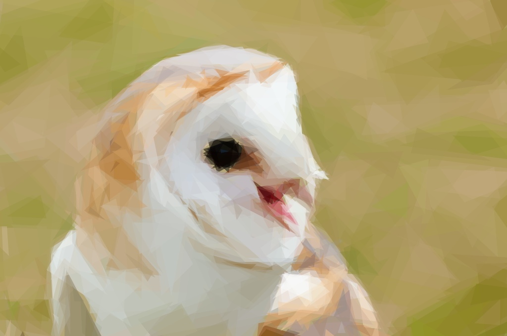
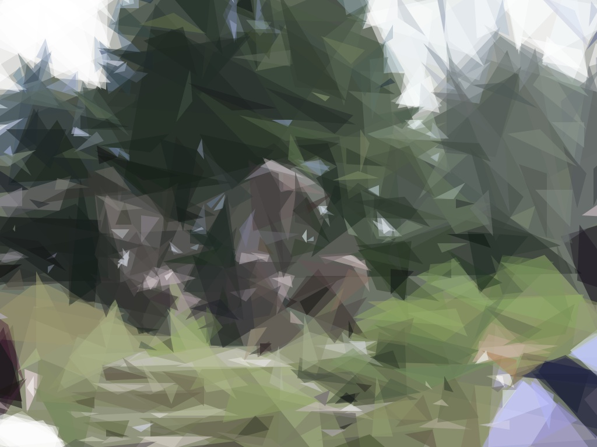

There was a man who had three sons, the youngest of whom was considered very silly, and everybody used to mock him and make fun of him. The eldest son wanted to go and cut wood in the forest, and before he left home his mother prepared beautiful pancakes and a bottle of wine for him to take with him, so that he might not suffer from hunger or thirst.
As he entered the forest he met a gray old man, who bade him "Good-morning," and said: "Give me a little piece of cake out of your basket and a drop of wine out of your bottle, for I am very hungry and thirsty."
But the clever son replied: "What, give you my cake and my wine! Why, if I did, I should have none for myself. Not I, indeed, so take yourself off!" and he left the man standing and went on.
The young man began cutting down a tree, but it was not long before he made a false stroke: the axe slipped and cut his arm so badly that he was obliged to go home and have it bound up. Now, this false stroke was caused by the little gray old man.
Next day the second son went into the forest to cut wood, and his mother gave him a cake and a bottle of wine. As he entered the wood the same little old man met him, and begged for a piece of cake and a drop of wine. But the second son answered rudely: "What I might give to you I shall want myself, so be off."
Then he left the little old man standing in the road, and walked on. His punishment soon came; he had scarcely given two strokes on a tree with his axe, when he hit his leg such a terrible blow that he was obliged to limp home in great pain.
Then the stupid son said to his father, "Let me go for once and cut wood in the forest."
But his father said: "No, your brothers have been hurt already, and it would be worse for you, who don't understand wood-cutting."
The boy, however, begged so hard to be allowed to go that his father said: "There, get along with you; you will buy your experience very dearly, I expect."
His mother, however, gave him a cake which had been made with water and baked in the ashes, and a bottle of sour beer.
When he reached the wood the very same little old man met him, and after greeting him kindly, said: "Give me a little of your cake and a drop from your bottle, for I am very hungry and thirsty."
"Oh," replied the simple youth, "I have only a cake, which has been baked in the ashes, and some sour beer; but you are welcome to a share of it. Let us sit down, and eat and drink together."
So they seated themselves, and, lo and behold, when the youth opened his basket, the cake had been turned into a beautiful cake, and the sour beer into wine. After they had eaten and drank enough, the little old man said: "Because you have been kind-hearted, and shared your dinner with me, I will make you in future lucky in all you undertake. There stands an old tree; cut it down, and you will find something good at the root."
Then the old man said "Farewell," and left him.
The youth set to work, and very soon succeeded in felling the tree, when he found sitting at the roots a goose, whose feathers were of pure gold. He took it up, and, instead of going home, carried it with him to an inn at a little distance, where he intended to pass the night.
The landlord had three daughters, who looked at the goose with envious eyes. They had never seen such a wonderful bird, and longed to have at least one of its feathers. "Ah," thought the eldest, "I shall soon have an opportunity to pluck one of them;" and so it happened, for not long after the young man left the room. She instantly went up to the bird and took hold of its wing, but as she did so, the finger and thumb remained and stuck fast. In a short time after the second sister came in with the full expectation of gaining a golden feather, but as she touched her sister to move her from the bird, her hand stuck fast to her sister's dress, and neither of them could free herself. At last, in came the third sister with the same intention. "Keep away, keep away!" screamed the other two; "in heaven's name keep away!"
But she could not imagine why she should keep away. If they were near the golden bird, why should not she be there? So she made a spring forward and touched her second sister, and immediately she also was made a prisoner, and in this position they were obliged to remain by the goose all night.
In the morning the young man came in, took the goose on his arm, and went away without troubling himself about the three girls, who were following close behind him. And as he walked quickly, they were obliged to run one behind the other, left or right of him, just as he was inclined to go.
In the middle of a field they were met by the parson of the parish, who looked with wonder at the procession as it came near him. "Shame on you!" he cried out. "What are you about, you bold-faced hussies, running after a young man in that way through the fields? Go home, all of you."
He placed his hand on the youngest to pull her back, but the moment he touched her he also became fixed, and was obliged to follow and run like the rest. In a few minutes the clerk met them, and when he saw the parson runing after the girls, he wondered greatly, and cried out, "Halloa, master parson, where are you running in such haste? Have you forgotten that there is a christening to-day?" And as the procession did not stop, he ran after it, and seized the parson's gown.
In a moment he found that his hand was fixed, and he also had to run like the rest. And now there were five trotting along, one behind the other. Presently two peasants came by with their sickles from the field. The parson called out to them, and begged them to come and release him and the clerk. Hardly had they touched the clerk when they also stuck fast as the others, and the simpleton with his golden goose travelled with the seven.
After awhile they came to a city in which reigned a king who had a daughter of such a melancholy disposition that no one could make her laugh; therefore he issued a decree that whoever would make the princess laugh should have her in marriage.
Now, when the simple youth heard this, he ran before her, and the whole seven trotted after him. The sight was so ridiculous that the moment the princess saw it she burst into a violent fit of laughter and they thought she would never leave off.
After this, the youth went to the king, and demanded his daughter in marriage, according to the king's decree; but his majesty did not quite like to have the young man for a son-in-law, so he said that, before he could consent to the marriage, the youth must bring him a man who could drink all the wine in the king's cellar.
The simpleton went into the forest, for he thought, "If anyone can help me, it is the little gray man." When he arrived at the spot where he had cut down the tree, there stood a man with a very miserable face.
The youth asked him why he looked so sorrowful.
"Oh," he exclaimed, "I suffer such dreadful thirst that nothing seems able to quench it; and cold water I cannot endure. I have emptied a cask of wine already, but it was just like a drop of water on a hot stone."
"I can help you," cried the young man; "come with me, and you shall have your fill, I promise you."
Upon this he led the man into the king's cellar, where he opened the casks one after another, and drank and drank till his back ached; and before the day closed he had quite emptied the king's cellar.
Again the young man asked for his bride, but the king was annoyed at the thought of giving his daughter to such a common fellow, and to get rid of him he made another condition. He said that no man should have his daughter who could not find someone able to eat up a whole mountain of bread.
Away went the simpleton to the forest as before, and there in the same place sat a man binding himself round tightly with a belt, and making the most horrible faces. As the youth approached, he cried, "I have eaten a whole ovenful of rolls, but it has not satisfied me a bit; I am as hungry as ever, and my stomach feels so empty that I am obliged to bind it round tightly, or I should die of hunger."
The simpleton could hardly contain himself for joy when he heard this. "Get up," he exclaimed, "and come with me, and I will give you plenty to eat, I'll warrant."
So he led him to the king's court, where his majesty had ordered all the flour in the kingdom to be made into bread, and piled up in a huge mountain. The hungry man placed himself before the bread, and began to eat, and before evening the whole pile had disappeared.
Then the simpleton went a third time to the king, and asked for his bride, but the king made several excuses, and at last said that if he could bring him a ship that would travel as well by land as by water, then he should, without any further conditions, marry his daughter.
The youth went at once straight to the forest, and saw the same old gray man to whom he had given his cake. "Ah," he said, as the youth approached, "it was I who sent the men to eat and drink, and I will also give you a ship that can travel by land or by sea, because when you thought I was poor you were kind-hearted, and gave me food and drink."
The youth took the ship, and when the king saw it he was quite surprised; but he could not any longer refuse to give him his daughter in marriage. The wedding was celebrated with great pomp, and after the king's death the simple wood-cutter inherited the whole kingdom, and lived happily with his wife.